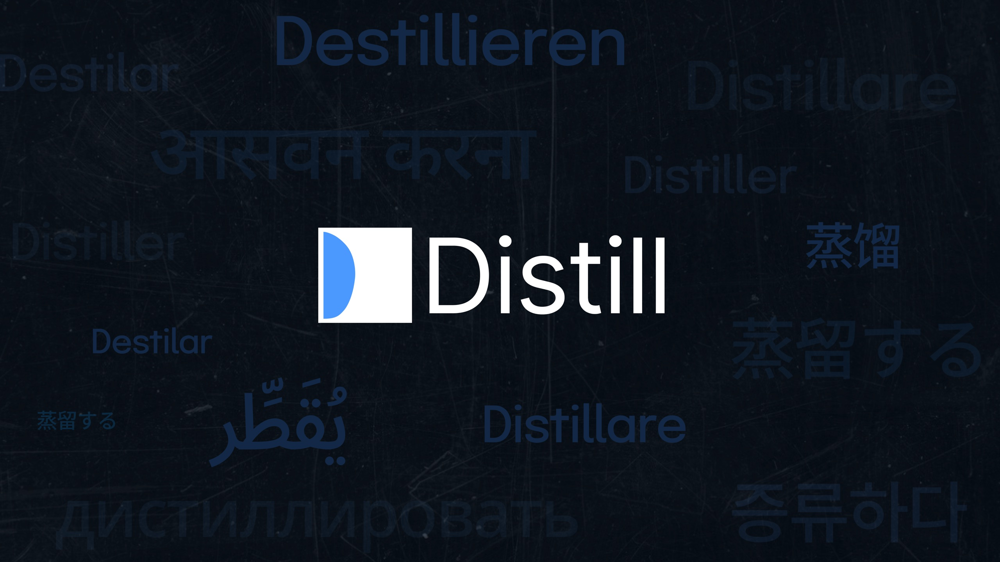
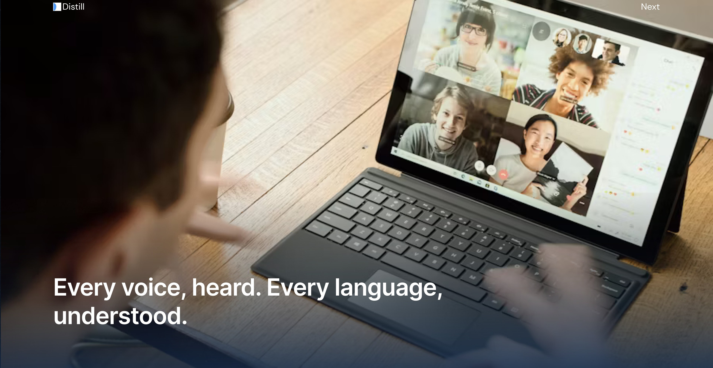
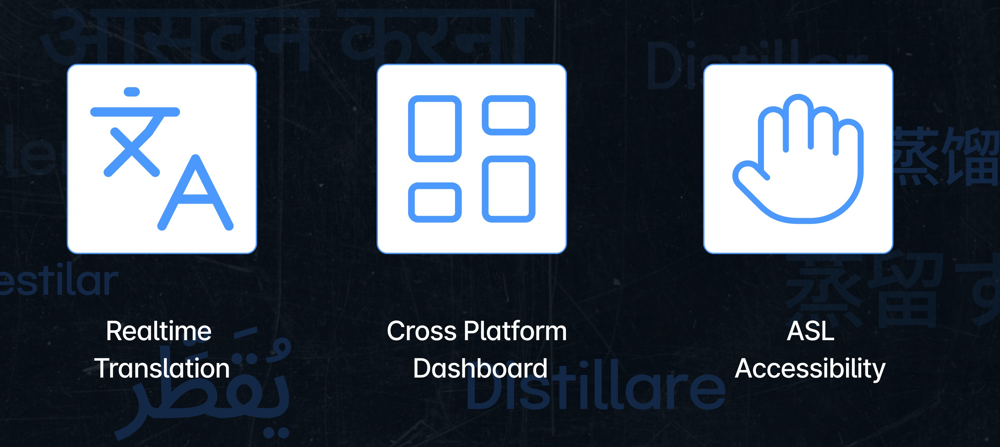
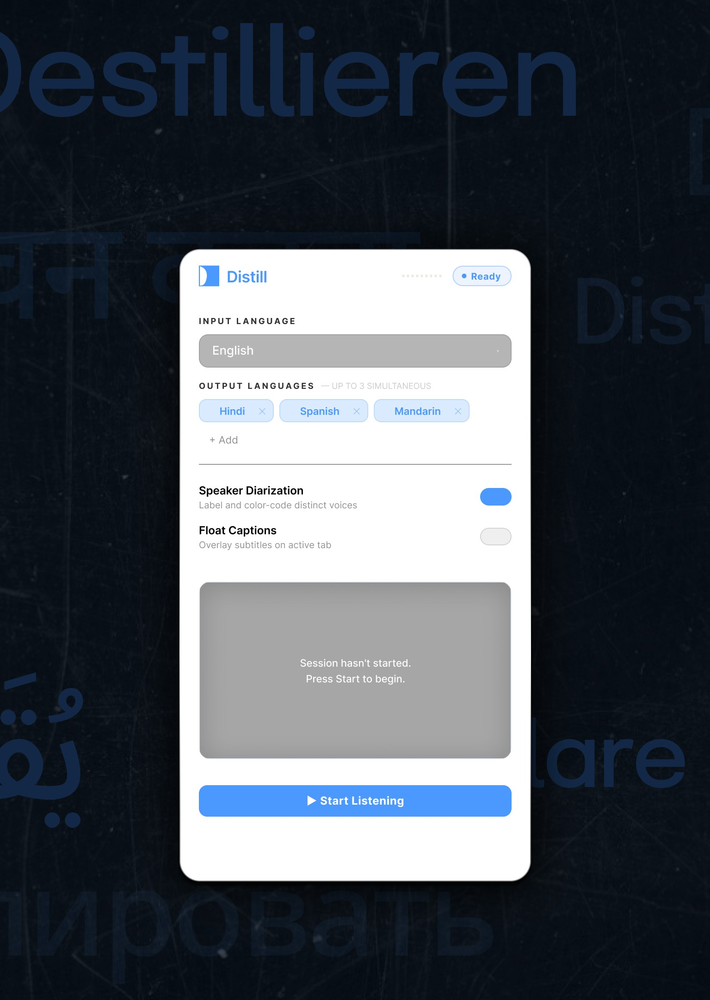
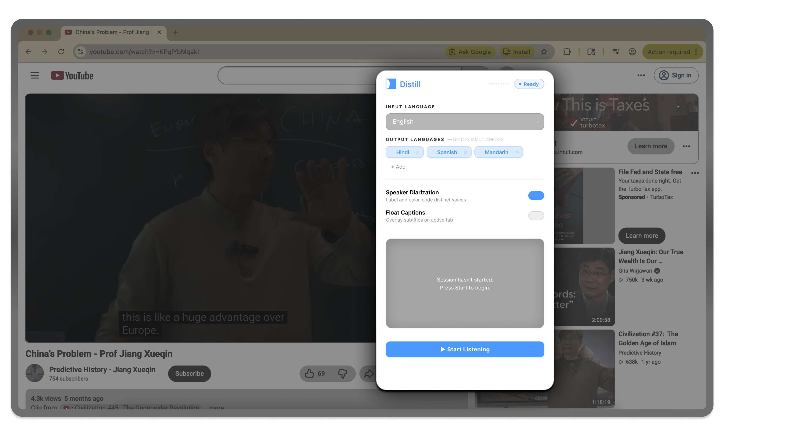
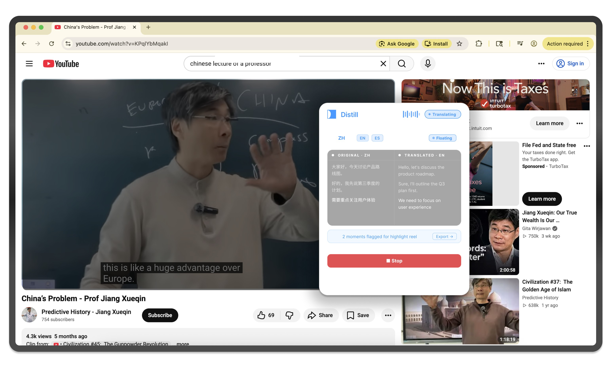
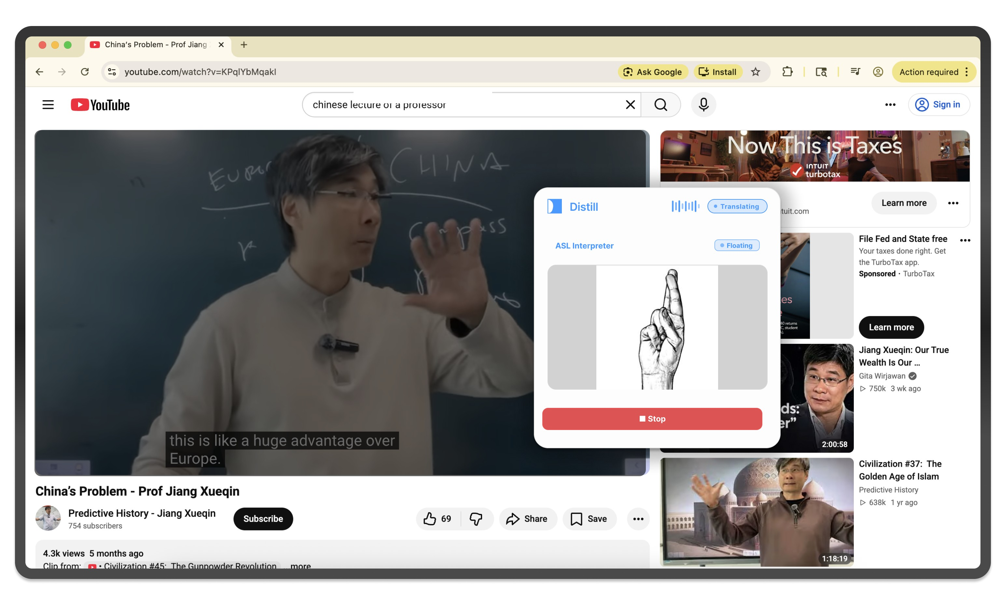

Every voice, heard. Every language, understood.
A Chrome extension that captures audio from any tab or microphone and translates it live into several languages at once, with an ASL accessibility mode and a dashboard that keeps every session.
Lectures, meetings and videos happen in real time. If you are deaf, hard of hearing or still learning the language, you are behind from the first sentence.
Captions, when they exist at all, come in one language and never in ASL.

It listens to whatever is playing in the browser and translates it as people speak, into up to three languages at the same time, so everyone in the conversation gets what they need.

An extension doesn't get its own screen. It sits on top of a page somebody else designed, so one wrong layout decision covers the video or the controls.
Every component had to earn its place: one clear input language, output languages as removable tokens, plain toggles for speaker labels and floating captions, and one blue button that starts everything.


Colour-coded and removable, so you can scan them at a glance.
Overlay the active tab without breaking the page under them.
Distinct voices are labelled and colour-coded.
We tested it on a Chinese lecture, not a clean demo recording. The original and the translation sit side by side as the speaker talks, and moments can be flagged for a highlight reel.
In ASL mode, an interpreter view replaces the text for signing users.


Sound goes in one end and translated speech comes out the other, while the speaker keeps talking.
No existing product combines all five capabilities.
| Cross-platform | Multi-language output | ASL accessibility | Persistent dashboard | Works on YouTube | |
|---|---|---|---|---|---|
| Distill | + | + | + | + | + |
| Google Translate | + | — | — | — | — |
| Zoom Captions | — | — | — | — | — |
| Otter.ai | + | — | — | + | — |
| DeepL | + | — | — | — | — |
| Krisp | + | — | — | — | — |
We pitched it as a company. Freemium: a free tier that runs out mid-meeting, Pro at $18 a month, and Teams at $45 a seat.
The plan: community launch first, then teams, then enterprise and an API, toward a $1.5M seed round.
2,500 Pro subscribers and 10 Teams customers, after a ProductHunt and community launch.
12,000 Pro subscribers, 80 Teams customers and a desktop app.
35,000 Pro subscribers, enterprise and API live. Assumes 5% free-to-paid conversion.